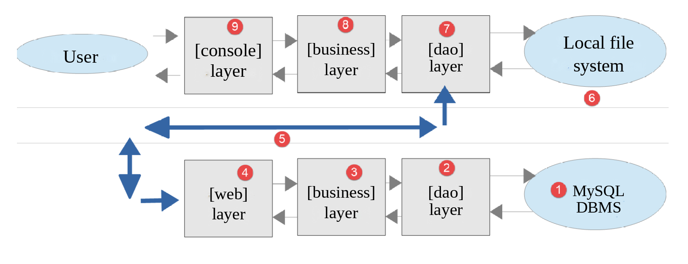

1. Introdução
O PDF do documento está AQUI.
O código deste documento está AQUI.
Este documento é um produto do Claude, da Anthropic. Trata-se de uma reescrita, para a linguagem PHP 8, do curso “Introdução à linguagem PHP 7 por meio de exemplos”, escrito por Serge Tahé em julho de 2019. Ele mantém o roteiro, os exemplos e o fio condutor, mudando a linguagem:
- o curso de 2019 usava o PHP 7.3. Desde então, o PHP passou por seis versões principais: 8.0 (2020), 8.1 (2021), 8.2 (2022), 8.3 (2023), 8.4 (2024) e 8.5 (2025). Este documento usa o PHP 8.5;
- entre essas duas versões, o PHP mudou bastante: muitos recursos foram introduzidos (tipos, enumerações, classes somente leitura, [match], argumentos nomeados…), e muitos outros foram descontinuados (deprecated): ainda funcionam, mas o PHP exibe uma mensagem de aviso a cada uso, para alertar que serão removidos em uma versão futura. O código deste documento não usa nenhum recurso descontinuado: todos os scripts foram executados com o PHP 8.5 configurado para exibir todos os erros, avisos e descontinuações, e nenhuma mensagem [Deprecated] aparece em seus resultados;
- as ferramentas também mudaram: o editor [VS Code] substitui o IDE [NetBeans]; o framework de testes [PHPUnit] substitui o [Codeception]; o comando [curl] substitui a ferramenta [Postman], a biblioteca [Symfony Mailer] substitui a [SwiftMailer], que foi descontinuada, e o servidor de e-mail [Mailpit] substitui o [hMailServer], que também foi descontinuado.
Este documento apresenta uma série de scripts de console PHP em diversas áreas (estruturas da linguagem, classes, acesso a arquivos, bancos de dados e Internet). A programação web é abordada por meio de web services. Neste documento, um web service designa qualquer aplicação web que produz dados (texto simples, JSON, XML) em vez de páginas HTML. São servidores de dados, não servidores de páginas web, que combinam HTML, CSS e JavaScript. O documento cobre os conceitos clássicos da web (o protocolo HTTP, respostas JSON ou XML, gerenciamento de sessões e autenticação), que também são usados na programação web tradicional. A seção final do documento constrói ainda uma aplicação web HTML.
1.1. O papel do PHP em uma aplicação cliente/servidor
Hoje em dia, é comum construir aplicações web no modo cliente/servidor:

- Em [1], o navegador exibe páginas web para um usuário. Essas páginas contêm JavaScript, que implementa um cliente para um web service de dados [2], bem como um cliente para um servidor de fragmentos de páginas web [3]. Frameworks JavaScript como [Vue.js], [React] ou [Angular] foram concebidos para essa finalidade;
- Em [2], o servidor web é um servidor de dados. Pode ser escrito em qualquer linguagem, por exemplo, em PHP. Ele não gera páginas web no sentido tradicional (HTML, CSS, JavaScript), exceto talvez na primeira vez. No entanto, essa primeira página pode ser obtida de um servidor web tradicional ([3]). O JavaScript da página inicial gerará então as diversas páginas web da aplicação, obtendo os dados [4] a exibir do servidor de dados [2]. Ele também pode obter fragmentos de páginas web ([5]) para formatar esses dados a partir do servidor de páginas web ([3]);
- Em [4], o usuário inicia uma ação;
- em [6, 7], o usuário recebe os dados formatados com um fragmento de página web.
Neste documento, escreveremos aplicações cliente/servidor em PHP com a seguinte estrutura:

Aqui temos uma aplicação cliente/servidor escrita inteiramente em PHP. Um script de console [9] consultará um servidor de dados [4]. O que você aprenderá aqui sobre a escrita do serviço de dados pode ser reutilizado em uma aplicação web: o serviço de dados em PHP pode ser mantido, e o cliente PHP pode ser substituído por um cliente JavaScript.
Como fio condutor deste documento, construiremos um serviço de cálculo de imposto de renda em 13 versões. A versão 12 terá a seguinte arquitetura:

A camada [web] do servidor terá uma arquitetura MVC (Model–View–Controller). Ela poderá responder em JSON, XML ou HTML. O curso inteiro visa à construção dessa versão, que a versão 13 protege.
1.2. O que mudou entre o PHP 7 e o PHP 8
As novidades do PHP 8 são apresentadas ao longo dos capítulos, à medida que se tornam necessárias, e sempre comparadas com a maneira como as coisas eram feitas no curso de PHP 7. Eis as principais, com o capítulo em que aparecem:
Novidade | Versão | Capítulo |
Tipagem estrita ([declare(strict_types=1)]), tipos de parâmetros e de retorno ([mixed]), tipos união ([int|float]), tipos anuláveis ([?string]) | 7.0 a 8.0 | Fundamentos do PHP |
a expressão [match], o operador null-safe [?->], os argumentos nomeados | 8.0 | Fundamentos do PHP |
[str_contains], [str_starts_with], [str_ends_with], [array_is_list], [json_validate], [array_find], [array_any], [array_all], [array_first], [array_last] | 8.0 a 8.5 | Fundamentos do PHP |
[fn] funções de seta, [f(...)] callables de primeira classe, [|>] operador pipe | 7.4 a 8.5 | Fundamentos do PHP |
Atributos tipados, promoção de parâmetros do construtor | 7.4, 8.0 | Classes |
Propriedades e classes somente leitura [readonly] | 8.1, 8.2 | Classes |
Enumerações [enum] | 8.1 | Classes |
Property hooks e visibilidade assimétrica [public private(set)] | 8.4 | Classes |
[clone] com modificação de atributos, o [#[\Override]] | 8.5, 8.3 | Classes |
Os tipos de interseção [A&B] e [new] nos valores padrão | 8.1 | Interfaces |
Erros que se tornaram exceções ([TypeError], [ValueError], [DivisionByZeroError]…), expressão [throw] , [catch] sem variável | 8.0 | Exceções e erros |
Constantes em traits | 8.2 | Traits |
[PDO::connect()] e as subclasses [Pdo\Mysql], [Pdo\Pgsql] | 8.4 | MySQL |
o atributo [#[\SensitiveParameter]] | 8.2 | Exercício de aplicação, versões 5 em diante |
a nova API [Dom\XMLDocument] | 8.4 | Processamento de documentos XML |
Inversamente, eis os principais recursos usados pelo curso de PHP 7 que hoje estão descontinuados ou removidos, com seus substitutos neste documento:
Recurso do curso de PHP 7 | Situação | Substituto |
Atributos dinâmicos (criados por simples atribuição [$object->x = 1]) | Descontinuado no 8.2 | atributos declarados, ou a classe [stdClass] |
interpolação ["${var}"] | descontinuada no 8.2 | ["$var"] ou ["{$var}"] |
[utf8_encode], [utf8_decode] | Descontinuadas no 8.2 | [mb_convert_encoding] |
Parâmetros implicitamente anuláveis [Type $x = null] | Descontinuados no 8.4 | [?Type $x = null] |
conversões [(integer)], [(boolean)], [(double)] | descontinuadas no 8.5 | [(int)], [(bool)], [(float)] |
As constantes [PDO::MYSQL_ATTR_*] | descontinuadas no 8.5 | [Pdo\Mysql::ATTR_*] |
As funções [imap_*] | removidas do núcleo do PHP no 8.4 | Clientes POP3 / IMAP escritos com sockets |
a biblioteca [SwiftMailer] | descontinuada | [Symfony Mailer] |
a biblioteca [php-mime-mail-parser] | exige uma extensão que não é fornecida | [zbateson/mail-mime-parser] |
[Codeception] | Substituído | [PHPUnit] 12 |
Sintaxe do Apache 2.2 [deny from all] | obsoleta | [Require all denied] (Apache 2.4) |
1.3. Ferramentas utilizadas
Os exemplos foram escritos e testados com as seguintes ferramentas (sua instalação é descrita no próximo capítulo):
- [PHP] 8.5, configurado para relatar todos os erros, avisos e descontinuações;
- o pacote [Laragon] 8, que reúne [Windows] e PHP 8.5, o servidor web [Apache] 2.4, o SGBD [MySQL] 8.4, o servidor [Redis] e o gerenciador de dependências [Composer]; o SGBD [PostgreSQL] pode ser adicionado com apenas alguns cliques;
- o editor [Visual Studio Code] (VS Code) e sua extensão [PHP Intelephense];
- as bibliotecas PHP instaladas com o [Composer]: [symfony/http-foundation], [symfony/http-client], [symfony/mailer], [symfony/mime] 8, [predis/predis] 3, [zbateson/mail-mime-parser] 3 e, para os testes, [phpunit/phpunit] 12;
- o servidor de e-mail de teste [Mailpit] e, para o protocolo IMAP, um servidor IMAP (uma conta [Gmail] ou um servidor local);
- a ferramenta de linha de comando [curl], incluída no [Windows], que exibe as trocas HTTP brutas;
- um navegador ([Chrome], [Firefox], [Edge]…).
Os scripts deste documento são comentados e sua saída no console é reproduzida. Explicações adicionais são fornecidas às vezes. Este documento exige leitura ativa: para entender um script, é preciso ler seu código, seus comentários e seus resultados de execução. As capturas de tela das páginas web foram feitas com um navegador controlado por programa: são páginas reais das aplicações do curso.
1.4. Exemplos
O código deste documento está armazenado em uma única pasta chamada [php8-oct-2026]:
A pasta [php8-oct-2026] deve ser colocada dentro da pasta [www] do [Laragon] (por exemplo, [C:\laragon\www\php8-oct-2026]): ela é o diretório raiz do servidor web [Apache]. Os scripts web ficam então acessíveis em URLs da forma [http://localhost/php8-oct-2026/scripts-web/...].
1.5. Conteúdo do documento
Capítulo | Conteúdo |
Instalação | Laragon, PHP 8.5, VS Code, Composer |
Fundamentos do PHP | Variáveis, tipos, tipagem estrita, arrays, strings, funções, arquivos de texto, JSON |
Exercício prático, versões 1 e 2 | Cálculo do imposto, com funções |
Classes, interfaces | classes, herança, atributos tipados, [readonly], enumerações, property hooks, interfaces |
Exceções e erros | A hierarquia [Throwable] do PHP 8, exceções próprias |
Exercício de aplicação, versão 3 | Cálculo do imposto com classes |
Traits, aplicações em camadas | Reutilização de código, arquitetura [dao] / [business] / [console] |
Exercício prático, versão 4 | Cálculo do imposto em camadas, testes [PHPUnit] |
Uso do SGBD MySQL | PDO, instruções SQL preparadas, transações |
Exercício prático, versões 5 a 7 | Dados do imposto em um banco de dados: MySQL, depois PostgreSQL, depois qualquer um dos dois |
Funções de rede | TCP, HTTP, SMTP, POP3, IMAP |
Web services | Páginas estáticas e dinâmicas, JSON, configurações, sessões, autenticação, HTTPS |
Exercício prático, versões 8 a 10 | Um servidor de cálculo do imposto e seu cliente, logs, envio de e-mails, cache [Redis] |
Processamento de documentos XML | SimpleXML, a API DOM do PHP 8.4 |
Exercício de aplicação, versão 11 | O servidor de cálculo do imposto responde em XML |
Exercício prático, versão 12 | Um servidor MVC que responde em JSON, XML ou HTML; uma aplicação web; um cliente do serviço JSON |
Exercício prático, versão 13 | Proteção do acesso aos arquivos da aplicação |
Todos estes são capítulos para iniciantes em PHP. No entanto, presume-se que o leitor já tenha programado em alguma linguagem e saiba o que são uma variável, um laço e uma função.